R: Visualization with ggplot2
2026-11-12 00:45:16
What is this talk about?
- how to visualize findings and data
- common data types and their appropriate visualizations
Why “plotting” does it matter?
- If no one can understand your research, then does it matter?
- Data has a story, but raw numbers can’t speak and can sometimes mislead (see Anscombe’s Quartet). Visualizations bridge complex statistics and human intuition.
- Patterns emerge in pictures, not spreadsheets. Plotting reveals hidden trends, clusters, and outliers that a table of data will completely hide.
- A well-crafted plot builds immediate trust, credibility, and impact with your audience.
What is ggplot2?
- an
Rpackage dedicated to visualization - gives researchers a common grammar for constructing visualizations
- many extensions (e.g.,
ggpubr) - base
ggplot2has had 2,116,363 downloads in the past 30 days
A skeletal ggplot call 🩻
ggplot() + # call ggplot and potentially feed in data and variables to plot to specific aesthetics
geom() + # pick a plot type. Data and variables to plot to specific aesthetics can also be assigned here
scale() + # make adjustments to the scales
labs() + # customize labels
... + # there are other options!
theme() # add some styleNOIR: levels of measurement
| Level | Order | Description | Example | General Note |
|---|---|---|---|---|
| Nominal | N | Classifies | Marital status | Pick a category |
| Ordinal | Y | Classifies, > < comparisons | Education | Pick a preference |
| Interval | Y | Difference, - + comparisons | Number of people | Count something |
| Ratio | Y | Magnitude, x / comparisons | Height | Measure something |
Read in data
ggplot(): the building block
Adding dimensions: aes()
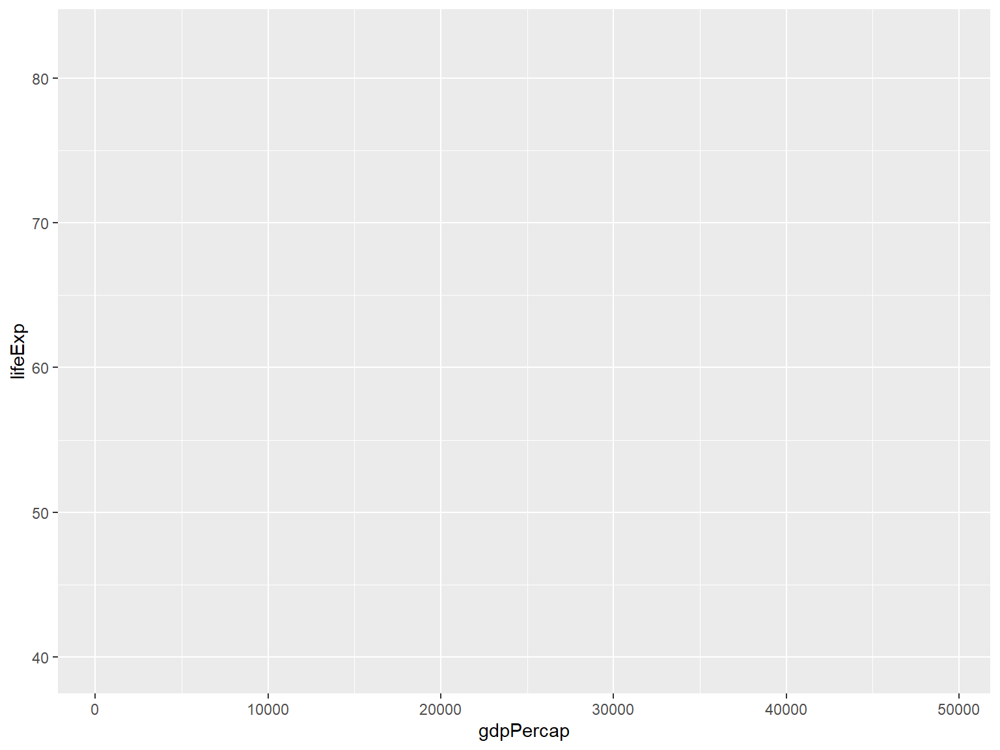
Visualizing scatterplot data
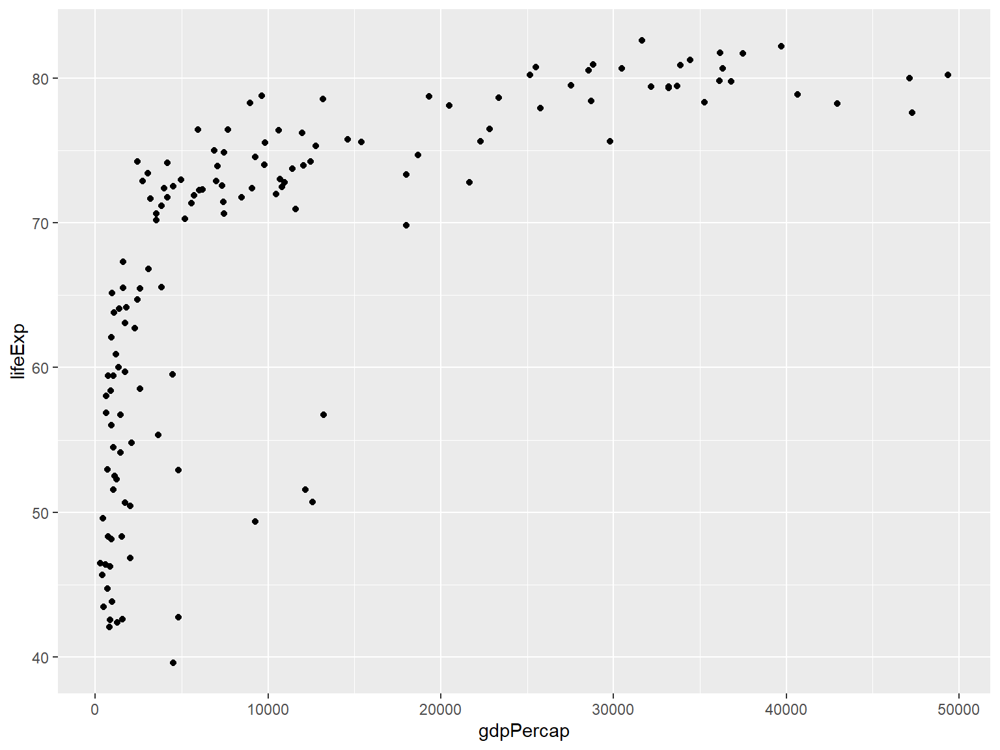
The geoms
ggplot2 call |
type of |
|---|---|
geom_bar(),
geom_col() |
bar charts |
geom_boxplot() |
box-and-whisker plots |
geom_histogram,
geom_violion(), geom_boxplot() |
distributions |
geom_line(),
geom_smooth() |
connecting observations (trends) |
geom_point(),
geom_jitter |
scatter plots |
geom_map(),
geom_sf() |
spatial data (rasters) |
Categorical variables: Basic Bar Chart
Frequency table
## continent
## Africa Americas Asia Europe Oceania
## 52 25 33 30 2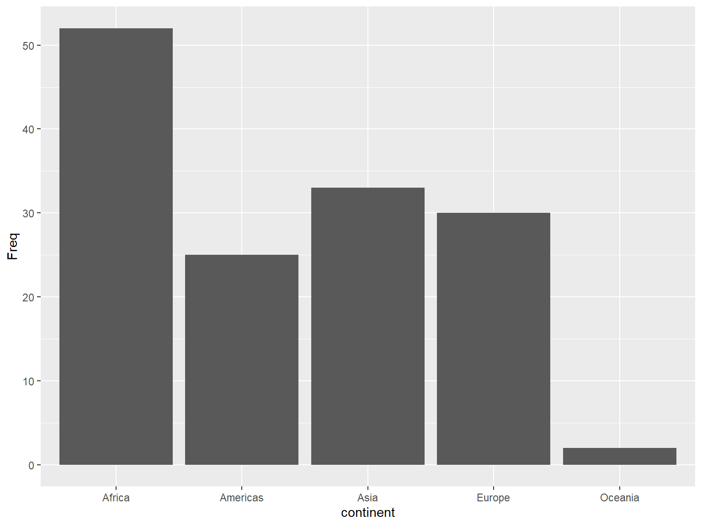
Additional aesthetics
ggplot(data = filter(gapminder, year == 2007), aes(x = gdpPercap, y = lifeExp, colour = continent, size = pop)) +
geom_point()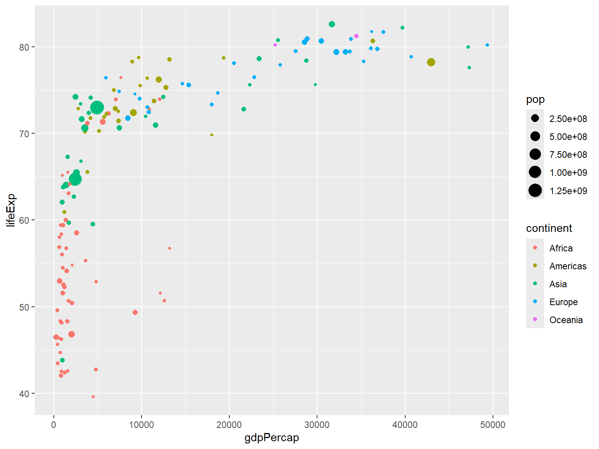
# aes() can take the 'size' parameter which (in this case) tells ggplot
# that we want to assign the points to size 'continent' (a nominal variable)
# ...which doesn't make sense :/
ggplot(data = filter(gapminder, year == 2007), aes(x = gdpPercap, y = lifeExp, size = continent)) +
geom_point()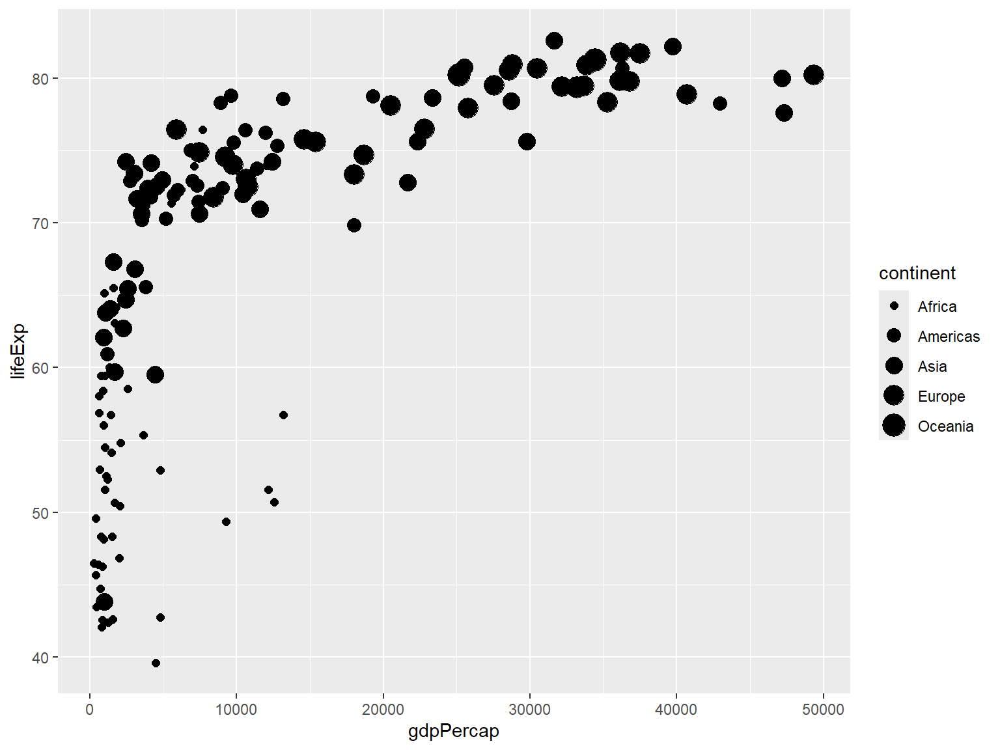
Playing with visual channels: size and
colour
# colour and size mapped to values
ggplot(data = filter(gapminder, year == 2007), aes(x = gdpPercap, y = lifeExp, colour = continent, size = pop)) +
geom_point()
# colour mapped to continent values, size to the geom
ggplot(data = filter(gapminder, year == 2007), aes(x = gdpPercap, y = lifeExp, colour = continent)) +
geom_point(size = 5)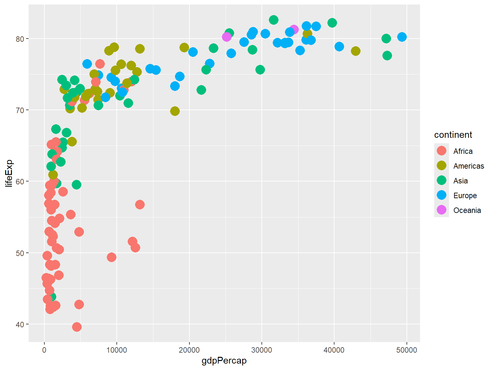
# colour and size mapped to values, but overriden by also being mapped to the geom, note also the loss of the legend
ggplot(data = filter(gapminder, year == 2007), aes(x = gdpPercap, y = lifeExp, colour = continent, size = pop)) +
geom_point(size = 5, colour = 'pink')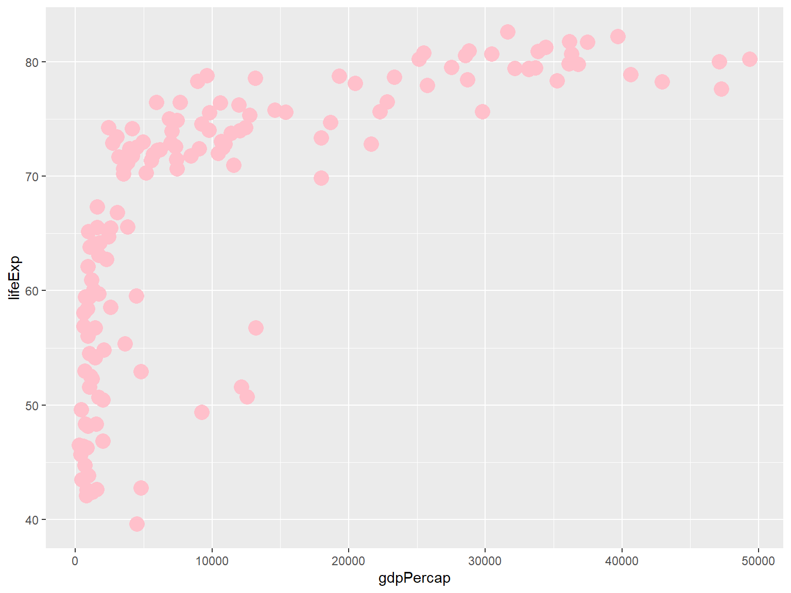
Much abrew about nothing: getting familiar with
RColorBrewer
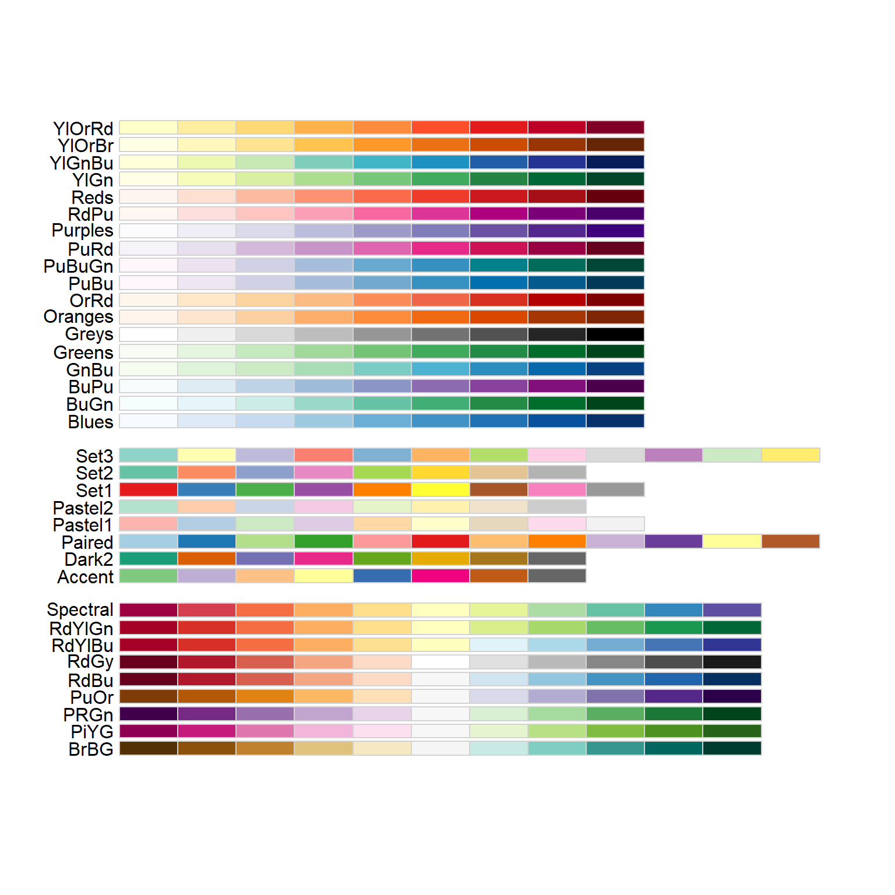
Scaling colour with RColorBrewer
ggplot(data = filter(gapminder, year == 2007), aes(x = gdpPercap, y = lifeExp, colour = continent, size = pop)) +
geom_point() + # scatterplot
scale_size(range = c(1,15)) + # constrain points to a common size
scale_colour_brewer(palette = "Dark2") + # 'Dark2' just one available colour scheme
scale_x_log10() # scale the x-axis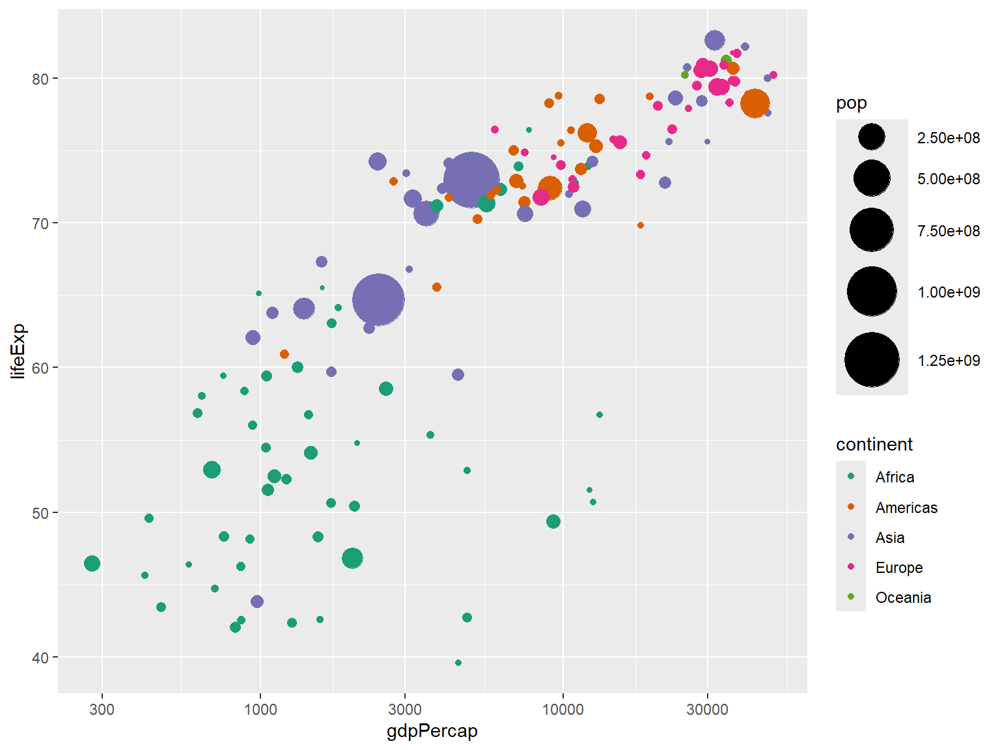
Labeling, titles, and captions
ggplot(data = filter(gapminder, year == 2007), aes(x = gdpPercap, y = lifeExp, colour = continent, size = pop)) +
geom_point() +
scale_size(range = c(1,15)) +
scale_colour_brewer(palette = "Dark2") +
scale_x_log10() +
labs(x = "GDP per Capita (2007)",
y = "Life Expectancy",
title = "Gapminder 2007",
caption = "2007 life expectancy plotted against per capita GDP.",
colour = "Continent",
size = "Population")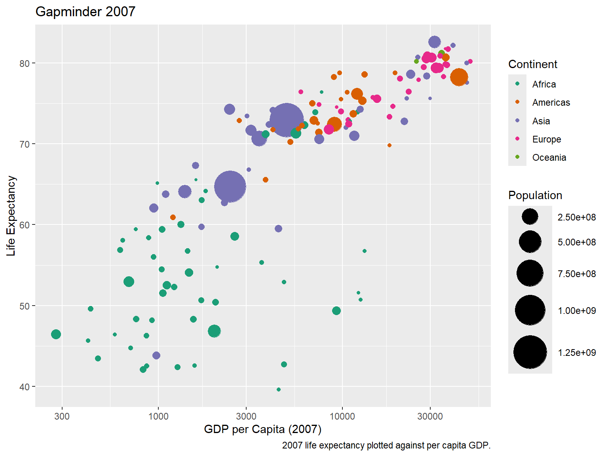
ggplot(data = filter(gapminder, year == 2007), aes(x = gdpPercap, y = lifeExp, colour = continent, size = pop)) +
geom_point() +
scale_size(range = c(1,15)) +
scale_colour_brewer(palette = "Dark2") +
scale_x_log10(labels = scales::dollar_format(),
breaks = breaks_width(10000)) +
labs(x = "GDP per Capita (2007",
y = "Life Expectancy",
title = "Gapminder 2007",
caption = "2007 life expectancy plotted against per capita GDP.",
colour = "Continent",
size = "Population")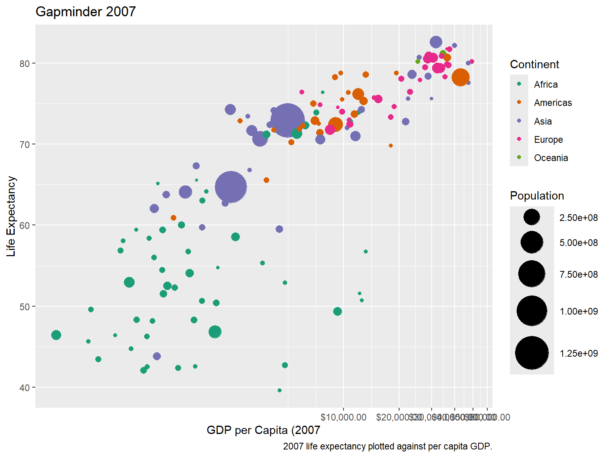
Tweaking the presentation
ggplot(data = filter(gapminder, year == 2007), aes(x = gdpPercap, y = lifeExp, colour = continent, size = pop)) +
geom_point() +
scale_size(range = c(1,15)) +
scale_colour_brewer(palette = "Dark2") +
scale_x_log10(labels = scales::dollar_format(),
breaks = breaks_width(10000)) +
labs(x = "GDP per Capita (2007",
y = "Life Expectancy",
title = "Gapminder 2007",
caption = "2007 life expectancy plotted against per capita GDP.",
colour = "Continent",
size = "Population") +
theme_minimal() # this is my personal favorite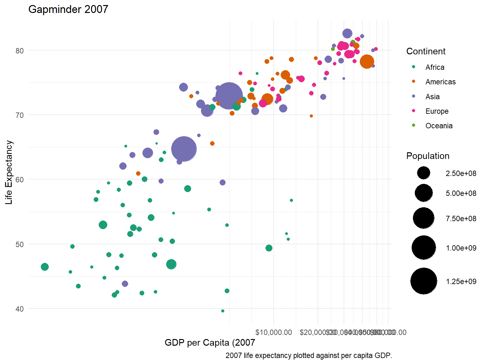
Themes
theme_ call |
look |
|---|---|
theme_bw() |
popular for publications |
theme_classic() |
clean, academic look |
theme_light() |
subtle, professional |
theme_dark() |
for dark backgrounds |
Other theme options: axis orientation, legends, and
grids
ggplot(data = filter(gapminder, year == 2007), aes(x = gdpPercap, y = lifeExp, colour = continent, size = pop)) +
geom_point() +
scale_size(range = c(1,15)) +
scale_colour_brewer(palette = "Dark2") +
scale_x_log10(labels = scales::dollar_format(),
breaks = breaks_width(10000)) +
labs(x = "GDP per Capita (2007",
y = "Life Expectancy",
title = "Gapminder 2007",
caption = "2007 life expectancy plotted against per capita GDP.",
colour = "Continent",
size = "Population") +
theme_minimal() + # minimal theme for a clean look
theme(
# tilt x-axis tick labels to 45 degrees for a cleaner look
axis.text.x = element_text(angle = 45),
legend.position = "left", # change position of legend
panel.grid.minor = element_blank() # element_blank() removes visual elements
)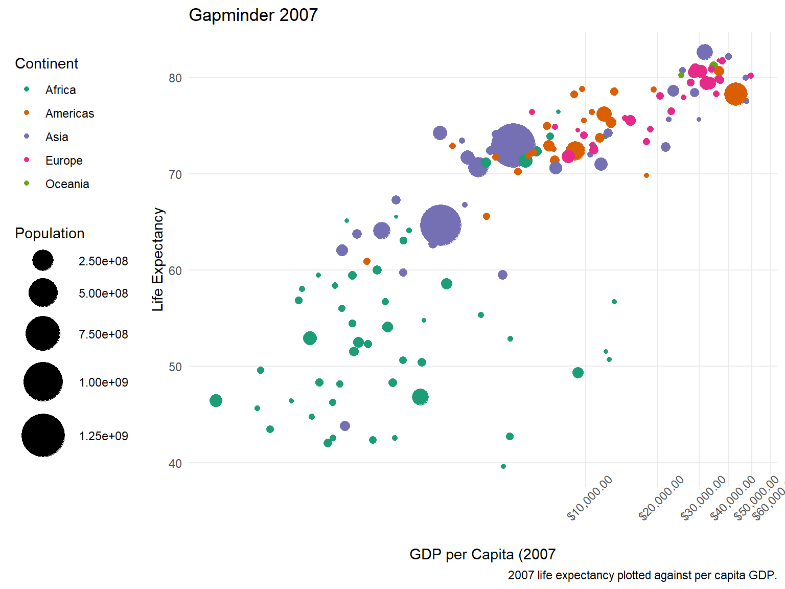
Statisical overlays & multiple geoms
ggplot(data = filter(gapminder, year == 2007), aes(x = gdpPercap, y = lifeExp, colour = continent, size = pop)) +
geom_point() +
geom_smooth(method = "lm", se = FALSE) + # overlay with a linear model
scale_size(range = c(1,15)) +
scale_colour_brewer(palette = "Dark2") +
scale_x_log10(labels = scales::dollar_format(),
breaks = breaks_width(10000)) +
labs(x = "GDP per Capita (2007",
y = "Life Expectancy",
title = "Gapminder 2007",
caption = "2007 life expectancy plotted against per capita GDP.",
colour = "Continent",
size = "Population") +
theme_minimal() +
theme(
axis.text.x = element_text(angle = 45),
legend.position = "left",
panel.grid.minor = element_blank()
)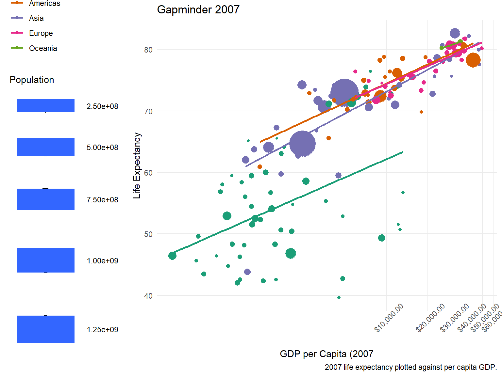
A cleaner model
ggplot(data = filter(gapminder, year == 2007), aes(x = gdpPercap, y = lifeExp)) +
geom_point(aes(colour = continent, size = pop)) +
geom_smooth(method = "lm", se = FALSE) + # create a lm smooth for all countries
scale_size(range = c(1,15)) +
scale_colour_brewer(palette = "Dark2") +
scale_x_log10(labels = scales::dollar_format(),
breaks = breaks_width(10000)) +
labs(x = "GDP per Capita (2007)",
y = "Life Expectancy",
title = "Gapminder 2007",
caption = "2007 life expectancy plotted against per capita GDP.",
colour = "Continent",
size = "Population") +
theme_minimal() +
theme(
axis.text.x = element_text(angle = 45),
legend.position = "left",
panel.grid.minor = element_blank()
)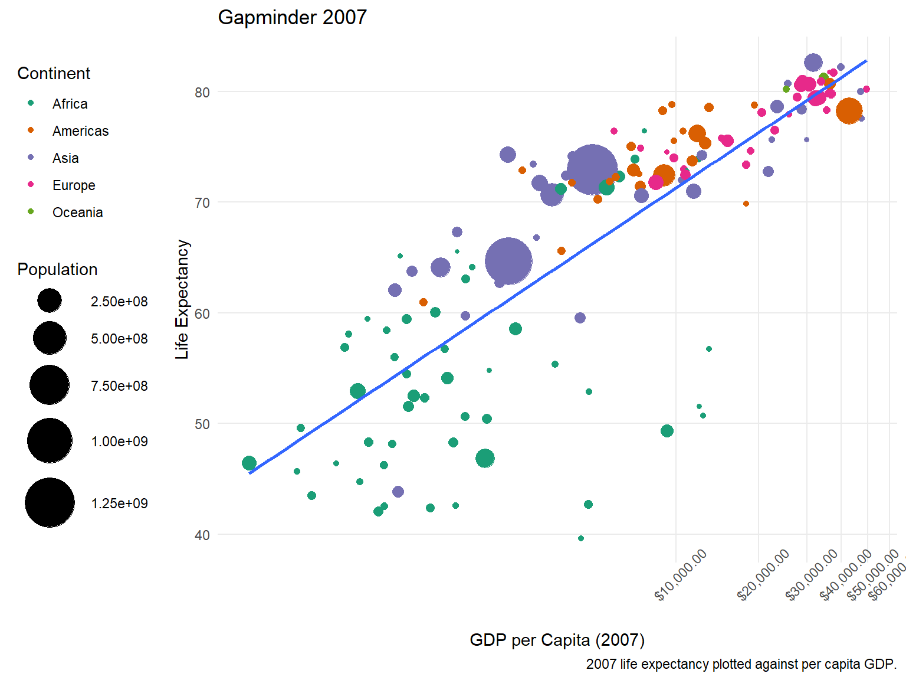
:::notes We can better articulate our data within the representation, by passing the x and y variables to ggplot, but the colour and size variables to a specific geom. This way, onlygdpPercap and
lifeExp get passed to geom_smooth(). In the
previous example the smooth had inherited the grouping variable
(continent). :::
More than one plot: facet_
ggplot(data = filter(gapminder, year == 2007), aes(x = gdpPercap, y = lifeExp)) +
geom_point(aes(colour = continent, size = pop)) +
geom_smooth(method = "lm", se = FALSE) +
scale_size(range = c(1,15)) +
scale_colour_brewer(palette = "Dark2") +
scale_x_log10(labels = scales::dollar_format(),
n.breaks = 4) +
labs(x = "GDP per Capita (2007)",
y = "Life Expectancy",
title = "Gapminder 2007",
caption = "2007 life expectancy plotted against per capita GDP.",
colour = "Continent",
size = "Population") +
theme_minimal() +
theme(
axis.text.x = element_text(angle = 45, hjust = 1),
legend.position = "left",
panel.grid.minor = element_blank()
) +
# facet wrap creates one scatterplot (and model) per continent
# the parameter `scales = "free_x"' tells ggplot to allow each faceted
# plot to vary freely in the x axis (each x-axis scale is determined by the
# spread of the data)
facet_wrap(~ continent, scales = "free_x") 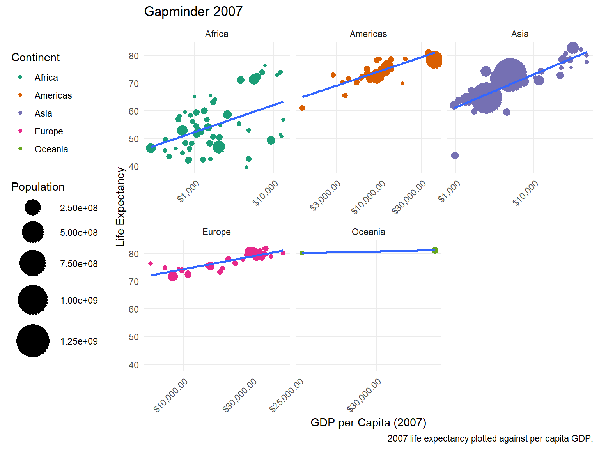
More than one plot: patchwork
le_gdp_scatter <- ggplot(data = filter(gapminder, year == 2007), aes(x = gdpPercap, y = lifeExp)) +
geom_point(aes(colour = continent, size = pop)) +
geom_smooth(method = "lm", se = FALSE) +
scale_size(range = c(1,15)) +
scale_colour_brewer(palette = "Dark2") +
scale_x_log10(labels = scales::dollar_format(),
n.breaks = 4) +
labs(x = "GDP per Capita (2007",
y = "Life Expectancy",
title = "Gapminder 2007",
caption = "2007 life expectancy plotted against per capita GDP.",
colour = "Continent",
size = "Population") +
theme_minimal() +
theme(
axis.text.x = element_text(angle = 45),
legend.position = "left",
panel.grid.minor = element_blank()
)
le_gdp_box <- ggplot(data = filter(gapminder, year == 2007), aes(x = continent, y = lifeExp)) +
geom_boxplot(aes(fill = continent)) +
scale_fill_brewer(palette = "Dark2") +
theme_minimal() +
theme(
legend.position = "none"
) + theme(
axis.text.x = element_text(angle = 45),
legend.position = "left",
panel.grid.minor = element_blank()
)
# patchwork syntax example "+" and "/"
le_gdp_scatter + le_gdp_box # side-by-side plots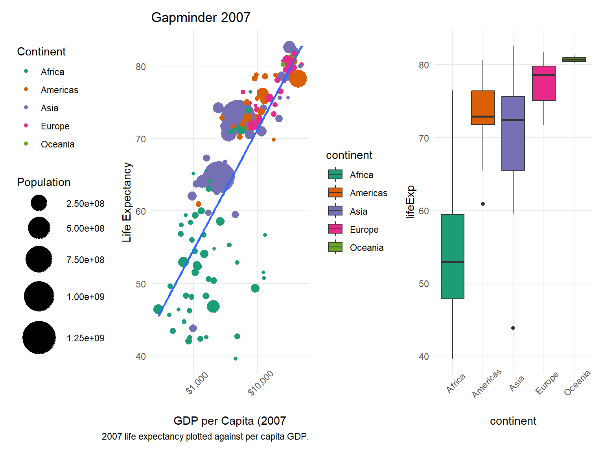
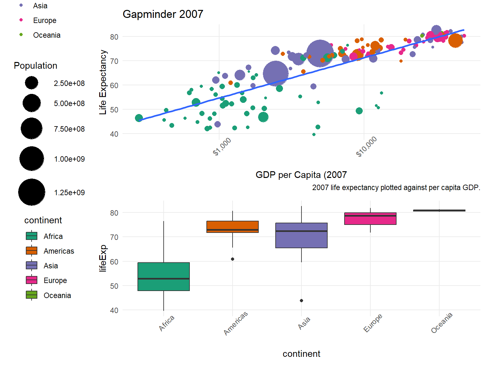
References
- ggplot2: Elegant Graphics for Data Analysis
- Wilkinson, L. (2005). The grammar of graphics (2nd ed.). Springer-Verlag.
- Stevens, S. S. (1946). On the theory of scales of measurement. Science, 103(2684), 677–680. https://doi.org/10.1126/science.103.2684.677.